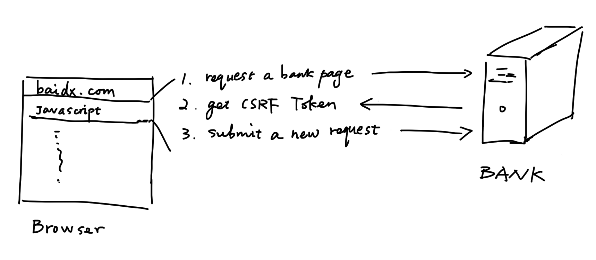
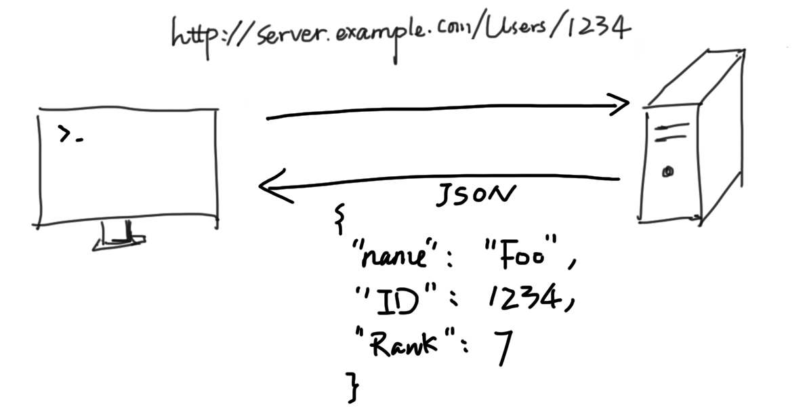
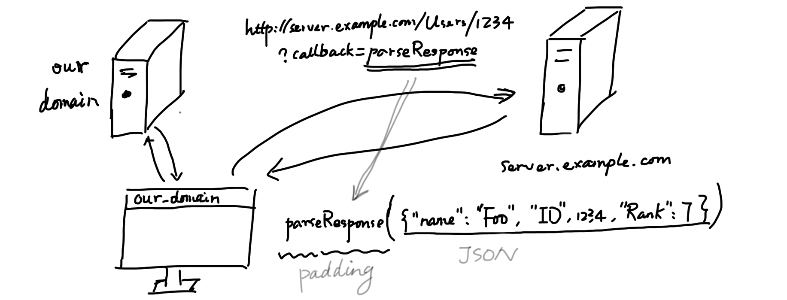

JSONP 不是 JSON，它是跨域访问的一种机制。那么什么是跨域访问？什么是 JSONP？如果你不清楚的话，不妨点开看看吧。
跨域访问
曾经想做一个“豆瓣FM”的第三方客户端，用的是 node-webkit，即可以用 HTML+CSS+JS 写桌面客户端。网上已经有人分析出了 豆瓣FM 的 API，理论上只需要乖乖调用便可。但当我把其中用到的页面在浏览器打开的时候，却什么都加载不出来。
后来查看 console 才发现原来 JQuery 的 $.get() 是不支持跨域访问的。那什么什么是跨域访问呢？
用前面的例子，假如我做了一个网页，最终放在了自己的域名 lotabout.me 下，那么这个网页里的 JS 代码，如果试图访问除了域名 ‘lotabout.me’ 外的其它域名的内容，就称为跨域访问。
传统上，浏览器的实现禁止 XMLHttpRequest 请求跨域访问，因为这样会引发安全问题。
具体会引发什么安全问题，可以参考 Stackoverflow: Why the cross domain ajax is a security concern。
这里举一个例子：跨站请求伪造。如下图：

即当你打开一个网站(例如 baidx.com)时，网站上可以嵌入一些 Javascript 代码，在你没有注意到的时候向银行的网站发送请求，而你之前登陆过银行的网站，所以银行的服务器就认为是你在做操作，所以在你不注意的时候可能就向别人转帐了。
现在防止跨站请求伪造的方法是银行在自己的页面里嵌入一个随机数，用户正常访问时连同这个随机数一起提交，而伪造的请求得不到这个随机数，因此银行就不响应它。但如果允许的跨域访问，‘baidx.com’ 网页上的脚本就可以向银行另外发出请求，得到一个新的随机数，从而绕过随机数这个保护措施。
总而言之，跨域访问并不是为了阻挡开发者，而是为了保证安全。
JSONP 如何跨域
我们知道，HTML 中的 <script> 标签是可以访问别的域名的，JSONP 就是利用
<script> 标签进行跨域访问的，那么具体是如何做到的呢？（下例修改自 wikipedia）
考虑我们通过 XMLHttpRequest 向服务器发送请求：
http://server.example.com/Users/1234，将用户 ID：1234 作为参数传给服务器，服务器返回一个 JSON 对象，如下：
{ |

但是浏览器拒绝了这个跨域请求，所以我们要另寻它法，方法就是利用 <script>
标签，如下：
<script type="application/javascript" |
上述这段代码会从服务器 http://server.example.com/Users/1234 上获取相应的内容，并将它作为 Javascript 执行。
然而我们知道，服务器返回的是一个 JSON 格式的数据，如果把这段代码作为
Javascript 执行则浏览器会报语法错误 SyntaxError: missing ; before statement。因此，这个技巧想要成功的话，还需要目标服务器帮忙。
如果目标服务器对返回的 JSON 数据进行一下包装：
parseResponse({"Name": "Foo", "Id": 1234, "Rank": 7}); |
那么我们只要事先定义好 parseResponse 函数，就可以对返回的数据进行处理了：

综上，JSONP 有如下要点：
- 利用了
<script>标签允许跨域访问的特点。 - 需要服务器对返回的 JSON 进行包裹，即需要其它域的服务器的支持。
其它相关问题
还有其它一些解决跨域访问需求的方法：
- 有自己的域名下建立一台代理服务器，将网页中需要跨域的请求发往代理服务器，再由服务器转发得到的结果。
- 较新的浏览器支持 CORS，能让服务器有选择性地支持跨域访问。
- 参考 wikipedia: Same-origin Policy。
启用 JSONP 也会引发其它的安全问题，可以参考 wikipedia:JSONP。